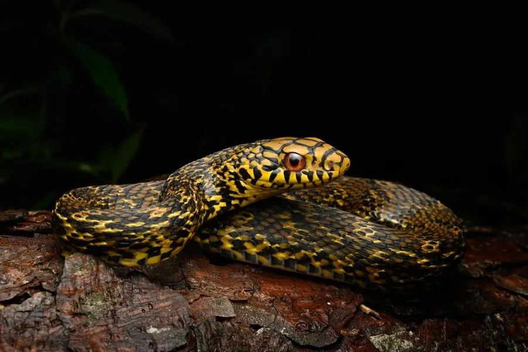

爬行动物 · 动物界
王锦蛇 Elaphe carinata

中国常见的大型无毒蛇，体色黄黑相间似菜花，民间也叫大王蛇，性情凶猛，会捕食其他蛇类，受惊时释放臭味自卫。
- 分类
- 门脊索动物门纲爬行纲目有鳞目科游蛇科属锦蛇属
- 栖息环境
- 山地、丘陵、农田、林缘与溪边灌丛
- 地理分布
- 中国大部分地区及越南北部
- 保护级别
- IUCN 无危（LC）；中国未列入国家重点保护名录
物种志
王锦蛇体长 1.5–2.5 米，身体粗壮，头部较长，眼后有一条黑色纵纹，背面呈黄绿或黄褐色，鳞片边缘黑色，形成黄黑相间的“菜花”状花纹，腹面黄色并有黑斑。它行动迅速、性情较凶猛，捕食时会主动攻击，食物包括鼠类、鸟类、蛙类和其他蛇类，甚至能捕食毒蛇。
它分布于中国大部分地区以及越南北部，栖息于山地、丘陵、农田和林缘，多在白天活动，善攀爬也善游泳。每年 6–8 月繁殖，雌蛇产卵 6–18 枚，孵化期约 60–80 天。王锦蛇受惊时会从泄殖腔腺体释放刺鼻臭味，民间因此称它“臭青公”；它是农田灭鼠的益蛇，因体型大、花纹醒目而常被捕捉，目前未被列入国家重点保护名录。
形态与习性
- 食性鼠类、鸟类、蛙类和其他蛇类
- 体长1.5–2.5 m
- 体重可达 2–3 kg
- 寿命约 15–20 年
- 繁殖卵生，每窝 6–18 枚，孵化 60–80 天
- 活动节律昼行性，行动迅速
- 防御受惊时释放刺鼻臭味，并鼓起颈部威吓
趣味知识
- 王锦蛇黄黑相间的花纹像菜花，民间又叫它“菜花蛇”。
- 它性情凶猛，能捕食包括毒蛇在内的其他蛇类。
- 受惊时它会从泄殖腔释放刺鼻的臭味，因此得名“臭青公”。